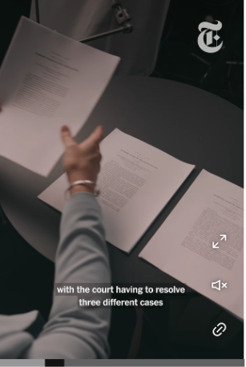
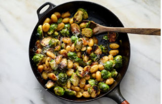
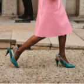

Cómo las elecciones intermedias podrían complicar el nuevo período de la Corte Suprema
Incluso antes de que los jueces comiencen su nuevo período hoy, el tribunal ha pasado el verano resolviendo rápidas solicitudes sobre disputas electorales.
💬 183
Incluso antes de que los jueces comiencen su nuevo período hoy, el tribunal ha pasado el verano resolviendo rápidas solicitudes sobre disputas electorales.

La Corte Suprema comenzará su período con un caso emblemático sobre si los gobiernos locales pueden demandar a las empresas petroleras por los daños causados por el cambio climático.

«¿Quieres mejorar un día entre semana? Cocina esto. ¿Quieres niños felices? Cocina esto. ¿Quieres deslumbrar a tus invitados? Cocina esto», escribió un lector.
20 MIN